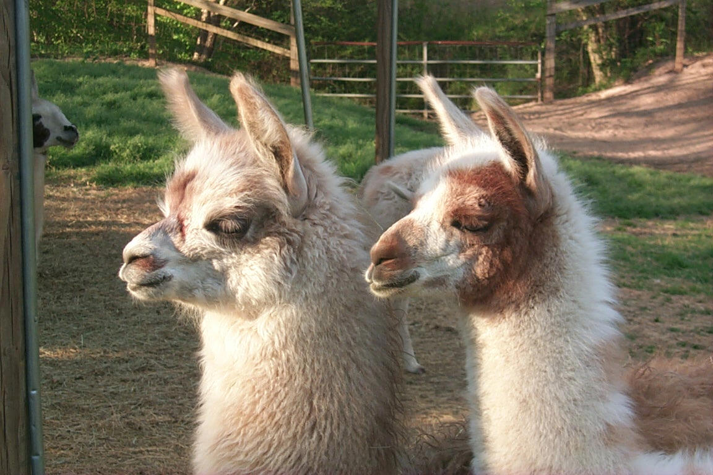
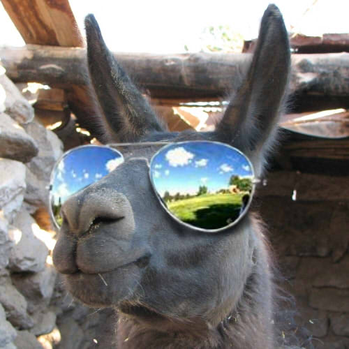

|  |
|
Llamas are large animals. They can be 6 feet tall (at the head) and reach between 280 and 450 pounds of weight.
Llama's body is covered with wool which can be black, gray, white or brown, with variety of patterns.
Llamas are pack animals, and can carry 50 to 75 pounds up to 20 miles. If you overload the animals, though, they'll refuse to move.
Llama has excellent sense of sight, smell and hearing, which are used for detection of potential danger.

Llamas are known as animals that spit when provoked or threatened. They can spit at humans also, but they usually spit at each other to solve misunderstandings in the group.
Llamas have inherited fear of coyote, mountain lions and other dog-like animals. Some llamas are used as "guards" of the sheep because they quickly alert and protect the herd when they spot a predator.
Llamas do not have specific time of mating. Male usually chases female for up to 10 minutes until she is finally ready to mate.